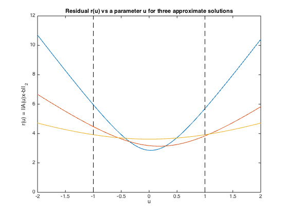

% Section 6.4.2 % Boyd & Vandenberghe "Convex Optimization" % Original by Lieven Vandenberghe % Adapted for CVX by Joelle Skaf - 10/03/05 % % Consider the least-squares problem: % minimize ||(A + tB)x - b||_2 % where t is an uncertain parameter in [-1,1] % Three approximate solutions are found: % 1- nominal optimal (i.e. letting t=0) % 2- stochastic robust approximation: % minimize E||(A+tB)x - b||_2 % assuming u is uniformly distributed on [-1,1] ) % (reduces to minimizing E ||(A+tB)x-b||^2 = ||A*x-b||^2 + x^TPx % where P = E(t^2) B^TB = (1/3) B^TB ) % 3- worst-case robust approximation: % minimize sup{-1<=u<=1} ||(A+tB)x - b||_2) % (reduces to minimizing max{||(A-B)x - b||_2, ||(A+B)x - b||_2} ) % Input Data randn('seed',0); m=20; n=10; A = randn(m,n); [U,S,V] = svd(A); S = diag(logspace(-1,1,n)); A = U(:,1:n)*S*V'; B = randn(m,n); B = B/norm(B); b = randn(m,1); % Case 1: Nominal optimal solution fprintf(1,'Computing the optimal solution for: \n'); fprintf(1,'1) the nominal problem ... '); cvx_begin quiet variable x_nom(n) minimize ( norm(A*x_nom - b) ) cvx_end % (reduces to minimizing max{||(A-B)x - b||_2, ||(A+B)x - b||_2} fprintf(1,'Done! \n'); % Case 2: Stochastic robust approximation fprintf(1,'2) the stochastic robust approximation problem ... '); P = (1/3)*B'*B; cvx_begin quiet variable x_stoch(n) minimize ( square_pos(norm(A*x_stoch - b)) + quad_form(x_stoch,P) ) cvx_end fprintf(1,'Done! \n'); % Case 3: Worst-case robust approximation fprintf(1,'3) the worst-case robust approximation problem ... '); cvx_begin quiet variable x_wc(n) minimize ( max( norm((A-B)*x_wc - b), norm((A+B)*x_wc - b) ) ) cvx_end fprintf(1,'Done! \n'); % plot residuals novals = 100; parvals = linspace(-2,2,novals); errvals_ls = []; errvals_stoch = []; errvals_wc = []; for k=1:novals errvals_ls = [errvals_ls, norm((A+parvals(k)*B)*x_nom - b)]; errvals_stoch = [errvals_stoch, norm((A+parvals(k)*B)*x_stoch - b)]; errvals_wc = [errvals_wc, norm((A+parvals(k)*B)*x_wc - b)]; end; plot(parvals, errvals_ls, '-', parvals, errvals_stoch, '-', ... parvals, errvals_wc, '-', [-1;-1], [0; 12], 'k--', ... [1;1], [0; 12], 'k--'); xlabel('u'); ylabel('r(u) = ||A(u)x-b||_2'); title('Residual r(u) vs a parameter u for three approximate solutions'); % print -deps robappr.eps
Computing the optimal solution for: 1) the nominal problem ... Done! 2) the stochastic robust approximation problem ... Done! 3) the worst-case robust approximation problem ... Done!
